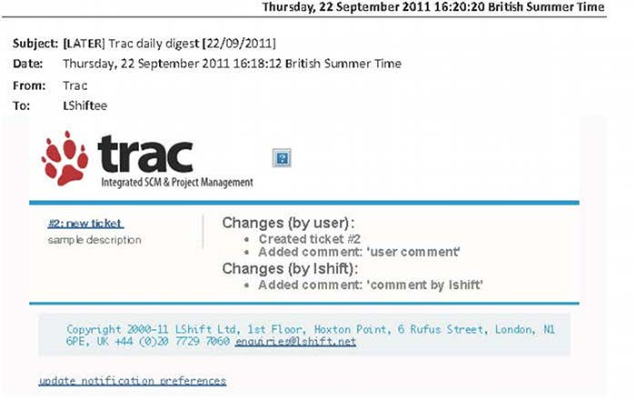

Table of contents
Burndown Chart plugin
- Project description
- Objectives
- Key deliverables
- Installation & usage
- Architecture overview
Email Digest plugin
- Project description
- Current state
- Objectives
- Key deliverables
- Installation & usage
- Architecture overview
Burndown Chart plugin > Project description
- What is a Burndown Chart?
- chart to visualise progress in milestone
- for example

- Assigned task
Burndown Chart plugin > Objectives
- allow historical recording of time spent
- allow input / reporting in hours / days for client reporting purposes
Burndown Chart plugin > Key deliverables
A Trac plugin component, containing modules:
- embed
- inject
- prefs
- tooltip
...and together with unit tests, of course
Burndown Chart plugin > Installation & usage
hg clone ssh://hg@hg/trac-burndown-plugin
python setup.py {install,test}- project uses virtualenvwrapper / pip, so
requirements.txt
- Enable EstimationToolsPlugin and this component in TracAdmin
Burndown Chart plugin > Architecture overview
Embed module
Burndown Chart plugin > Architecture overview
Embed module
- Milestone

Burndown Chart plugin > Architecture overview
Inject module
- Burndown Chart

Burndown Chart plugin > Architecture overview
Prefs module
- Admin panel configuration options
Burndown Chart plugin > Architecture overview
Tooltip module
- Tooltip which appears on creating/modifying TracTickets
Email Digest plugin > Project description
- Assigned task
- developing a Trac plugin
- email notification
- of changes in TracTickets
- either as a single email
- or daily digest
Email Digest plugin > Current state
Email Digest plugin > Objectives
- users should be able to adjust their own settings
- certain emails to be sent immediately
Email Digest plugin > Key deliverables
A Trac plugin component, containing modules:
Email Digest plugin > Installation & usage
Installation
- as before, repository @ trac-email-digest-plugin
- no unit tests written for this
- additionally, run
init_rabbitmq-server.sh
Consumer crontask configuration
- using TracCronPlugin
- enable this cronjob
- understands cron expressions, eg every minute:
* 0/1 * * * ? *
- plugin uses TracLogging facility
- minimum resolution = 1 min interval
Email Digest plugin > Architecture overview
- deactivates default TracNotification
- uses amqp-deliver Python library
- changes are sent as messages, not emails, to rabbitmq-server
- consumer polls these exchanges-queues for messages
- emailing according to user-specified policy (tested using Exim MTA)
- abstracts this task away from Trac
- compatibility Trac 0.12 onwards
Email Digest plugin > Architecture overview
Polling AMQP Consumer crontask configuration
Email Digest plugin > Architecture overview
Trac plugin user configuration page
Email Digest plugin > Architecture overview
Sample emails generated
